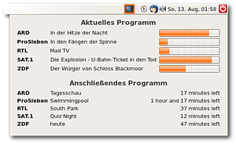
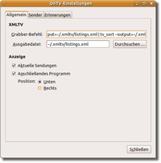
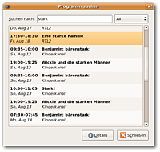

OnTV
Archivierte Anleitung
Dieser Artikel wurde archiviert, da er - oder Teile daraus - nur noch unter einer älteren Ubuntu-Version nutzbar ist. Diese Anleitung wird vom Wiki-Team weder auf Richtigkeit überprüft noch anderweitig gepflegt. Zusätzlich wurde der Artikel für weitere Änderungen gesperrt.
Zum Verständnis dieses Artikels sind folgende Seiten hilfreich:
OnTV  ist eine kleines Applet für das Panel von GNOME 2, das das aktuelle TV-Programm und die nachfolgenden Sendungen anzeigen kann. Zusätzlich ist es möglich, im Programm nach Sendungen zu suchen und sich bei bestimmten Sendungen benachrichtigen zu lassen.
ist eine kleines Applet für das Panel von GNOME 2, das das aktuelle TV-Programm und die nachfolgenden Sendungen anzeigen kann. Zusätzlich ist es möglich, im Programm nach Sendungen zu suchen und sich bei bestimmten Sendungen benachrichtigen zu lassen.
Der TV-Browser kann ebenfalls die aktuellen Sendungen über einen Klick auf das Panel-Icon anzeigen; dort allerdings nur die gerade laufenden, nicht die nachfolgenden, bietet aber im Hauptfenster wesentlich mehr Informationen und Möglichkeiten (auch eine Aufnahmefunktion ist möglich). EPG liefern auch Me TV, Kaffeine sowie VLC sowie die DVB-Erweiterung für Totem.

Installation¶
Zur Installation [1] ist folgendes Paket notwendig:
ontv (universe)
 mit apturl
mit apturl
Paketliste zum Kopieren:
sudo apt-get install ontv
sudo aptitude install ontv
Es werden einige weitere Pakete mit installiert.
Einrichten¶
Frühere Versionen des Programms legten ihre Konfigurationsdateien in ~/.gnome2/ontv/ab. Version 3.2.0 verwendet stattdessen ~/.config/ontv/. Ggf. kommt es bei der Installation zu einer Warnmeldung, die aber ignoriert werden kann.
Datenquelle¶
OnTV selber zeigt nur Daten an, die andere Programme für das Applet generieren. Als Grundlage dienen xmltv-Dateien mit dem Fernsehprogramm. Die Skripte für die Grabber sind im Paket xmltv-utils enthalten, das als Abhängigkeit für OnTV mitinstalliert wird. Nähere Angaben findet man über den Befehl tv_find_grabbers, mit dem die vorhandenen Programme mit Länderangaben, und ggf. Besonderheiten aufgelistet werden. Weitere Einzelheiten kann man den jeweiligen Manpages entnehmen, die für alle Skripte existieren.
Die Grabber sollten zunächst im Terminal [2] im Konfigurationsmodus gestartet werden (tv_grab_XX --configure), um festzulegen, für welche verfügbaren Sender man tatsächlich Daten abspeichern möchte. Die Angaben werden in einer tv_grab_XX.conf-Datei gespeichert. In einem zweiten Durchlauf (tv_grab_XX --output ~/.xmltv/LISTINGS.xml) werden die Daten dann heruntergeladen und in einer xml-Datei abgelegt (der Name ist frei wählbar; die Installationsroutine legt eine tv_grab_XX.xml-Datei an). Diese sollten mit dem Befehl tv_sort --output ~/.xmltv/LISTINGS.xml ~/.xmltv/LISTINGS.xml in die richtige Reihenfolge gebracht werden; dadurch werden ggf. fehlende Endzeiten der Sendungen durch Abgleich mit den Anfangszeiten der nachfolgenden Sendungen ermittelt und eventuelle Fehler bereinigt, zudem werden, so vorhanden, die Sender-Icons ohne diese Sortierung ggf. nicht angezeigt. Aus der LISTINGS.xml kann das Applet dann die Informationen auslesen und anzeigen. Tatsächlich fragt das Programm bei Erstaufruf nach der Installation ab, für welches Land man die Daten herunterladen möchte und konfiguriert es entsprechend; diese Routine ist allerdings nicht immer verlässlich, sodass die "händische" Variante hier ggf. zuverlässiger arbeitet.
Theoretisch könnten auch mit nxtvepg die entsprechenden Daten extrahiert werden, das funktioniert allerdings nur, wenn noch Analog-Empfang möglich ist, da das Programm nicht mit DVB umgehen kann.
Applet¶
 Nun kann man mit  -Klick auf ein GNOME Panel
-Klick auf ein GNOME Panel
"Zum Panel hinzufügen -> Zubehör -> OnTV"
auswählen. Wenn das OnTV-Applet läuft, stellt man mit -Klick auf das Applet
"Einstellungen -> Allgemein"
den Befehl für den Grabber der xmltv-Daten sowie den Pfad zu der erstellten Datei tv_grab_XX.xml ein.
Exemplarisch die Grabber-Angaben für das schwedische Fernsehprogramm:
tv_grab_se_swedb --output=~/.xmltv/tv_grab_se_swedb.xml | tv_sort --output=~/.xmltv/tv_grab_se_swedb.xml ~/.xmltv/tv_grab_se_swedb.xml
Die Auswahlfunktion für die Ausgabedatei darunter hat einen kleinen "bug"; sie erwartet eine Datei mit großgeschriebener XML-Erweiterung, und zeigt daher die angelegten .xml-Dateien nicht an, bevor nicht die Auswahl unten rechts im Fenster auf "Alle Dateien" erweitert wurde.
Außerdem kann eingestellt werden, was in welchem Umfang angezeigt werden soll. Durch (De-)Aktivieren der Kästchen wird eingestellt, ob z.B. nur das aktuelle TV-Programm angezeigt werden soll oder auch die nachfolgenden Sendungen und im Reiter "Sender" können abschließend die gewünschten Sender ausgewählt werden. Sie werden dann in der Reihenfolge der Auswahl angezeigt. Unter "Reminders" kann eingestellt werden, wie viele Minuten vor dem Sendungsbeginn ein Hinweis eingeblendet werden soll; dieser Hinweis wird dann bis zum Start der Sendung jede Minute erneut eingeblendet.
Benutzung¶
Das Applet wird mit einem  -Klick geöffnet. Dabei wird nun das aktuelle Programm der eingestellten Sender angezeigt, so wie die darauf folgenden Sendungen. Für die Sendungen werden, wenn vorhanden, die Beschreibungen in ToolTips angezeigt, wenn man den Mauszeiger darüber schweben lässt. Ein -Klick auf eine Sendung ermöglicht es, die "Details" (Name, Sender, ggf. Logo, ggf. eine Beschreibung, Sendezeit) in einem Fenster aufzurufen, sowie eine Erinnerung zu erstellen.
-Klick geöffnet. Dabei wird nun das aktuelle Programm der eingestellten Sender angezeigt, so wie die darauf folgenden Sendungen. Für die Sendungen werden, wenn vorhanden, die Beschreibungen in ToolTips angezeigt, wenn man den Mauszeiger darüber schweben lässt. Ein -Klick auf eine Sendung ermöglicht es, die "Details" (Name, Sender, ggf. Logo, ggf. eine Beschreibung, Sendezeit) in einem Fenster aufzurufen, sowie eine Erinnerung zu erstellen.
Um die Daten zu aktualisieren (im Normalfall wird das Programm der nächsten fünf Tage gespeichert, das kann aber je nach Grabber variieren und ist auch über die Option --days N im Grabber-Befehl festlegbar), mit einem -Klick auf das Applet das Dropdown-Menü öffnen und den ersten Eintrag ("Update TV Listings"), alternativ
Strg +
U , ausführen, damit wird dann der im Konfigurationsfenster angegebene Grabber-Befehl abgearbeitet.

Programmsuche¶
Sucht man nach einem bestimmten Film oder einer Serie, kann die Suchfunktion des Programms genutzt werden. Hierzu mit einem -Klick auf das Applet "Programm suchen..." (oder
Strg +
S ) auswählen und in der sich nun öffnenden Maske den gewünschten Titel eingeben. Das Programm zeigt alle Ergebnisse mit den Sendezeiten an. Die Suche startet sofort mit Eingabe des ersten Buchstabens, sodass gerade bei größeren Datenbeständen zunächst ggf. der Eindruck erweckt wird, das Programm reagiere nicht mehr. Mit der Auswahl einzelner Sender im Fenster oben rechts lässt sich die Datenmenge reduzieren, außerdem kann man so einen Überblick über das gesamte Programm eines Senders bekommen.
Erinnerungsfunktion¶
Sowohl in der Anzeige des Applets als auch in der Programmsuche lassen sich "Reminders" erstellen, indem man die gewünschte Sendung -klickt und dort "Add reminder" auswählt. Die Erinnerungen lassen sich in "Einstellungen -> Reminder" verwalten. OnTV erinnert an alle Sendungen mit dem gewählten Namen, wer z.B. an die "Tagesschau" erinnert werden möchte, bekommt zu jeder Sendung eine Einblendung...
Daten deutscher Sender¶
Die Daten deutscher Sender sind in vollständigem Umfang derzeit nur über ein Abo für epgData  erhältlich (Jahresbeitrag 17,95 €) und können dann über den Grabber tv_grab_eu_epgdata mit PIN-Eingabe bezogen werden. Die Grabber für Dänemark und die Niederlande liefern allerdings Daten für die größeren öffentlich-rechtlichen und privaten deutschen Sender. Die besten Ergebnisse (z.T. mit detailierten Beschreibungen zu den Sendungen) liefert der Grabber für die Schweiz, allerdings muss dazu die aktuelle Version von xmltv verwendet werden.
erhältlich (Jahresbeitrag 17,95 €) und können dann über den Grabber tv_grab_eu_epgdata mit PIN-Eingabe bezogen werden. Die Grabber für Dänemark und die Niederlande liefern allerdings Daten für die größeren öffentlich-rechtlichen und privaten deutschen Sender. Die besten Ergebnisse (z.T. mit detailierten Beschreibungen zu den Sendungen) liefert der Grabber für die Schweiz, allerdings muss dazu die aktuelle Version von xmltv verwendet werden.
Tipps¶
Wenn das Programm auch nach einem Neustart nicht läuft, kann man versuchen, alle Daten zu entfernen (in ~/gnome.2/ontv/ und ~/.xmltv/) den Grabber nochmals "händisch" durchlaufen lassen. Wenn man dann in den Einstellungen keinen Grabberbefehl verwendet, die erstellte xml-Datei bei "Output file" angibt und dann ein Update der Listings durchführt, sollte das Applet die Daten anzeigen.
Wenn man nacheinander verschiedene Grabber verwendet hat, kann es vorkommen, dass Sender und Daten des zuvor verwendeten Grabbers weiter angezeigt werden. OnTV speichert die Daten in der Datei listings.p im Verzeichnis ~/.gnome2/ontv/ (bzw. ~/.conf/ontv). Nach Löschung bzw. Umbenennung sollte nach einem Neustart eine neue Datei angelegt werden, die dann nur noch die aktuellen Daten beinhaltet. Das kann allerdings je nach Umfang der Datenmenge etwas dauern, sodass die Anzeige ggf. erst verzögert erfolgt.
Grabber lassen sich auch kombinieren, dazu existiert das Skript tv_grab_combiner, mit dem sich Skripte kombiniert verwenden lassen. Dabei sollte die --days-Option verwendet werden, um sicherzustellen, dass für alle Sender der gleiche Zeitraum gespeichert wird.
Wenn die Details zur Sendung so umfangreich sind, dass das Fenster nicht komplett auf den Bildschirm passt, kann es bei gedrückter
Alt -Taste mit gedrückter -Taste verschoben werden, so wird auch an die "Schließen"-Schaltfläche erreichbar.
- Erstellt mit Inyoka
-
 2004 – 2017 ubuntuusers.de • Einige Rechte vorbehalten
2004 – 2017 ubuntuusers.de • Einige Rechte vorbehalten
Lizenz • Kontakt • Datenschutz • Impressum • Serverstatus -
Serverhousing gespendet von